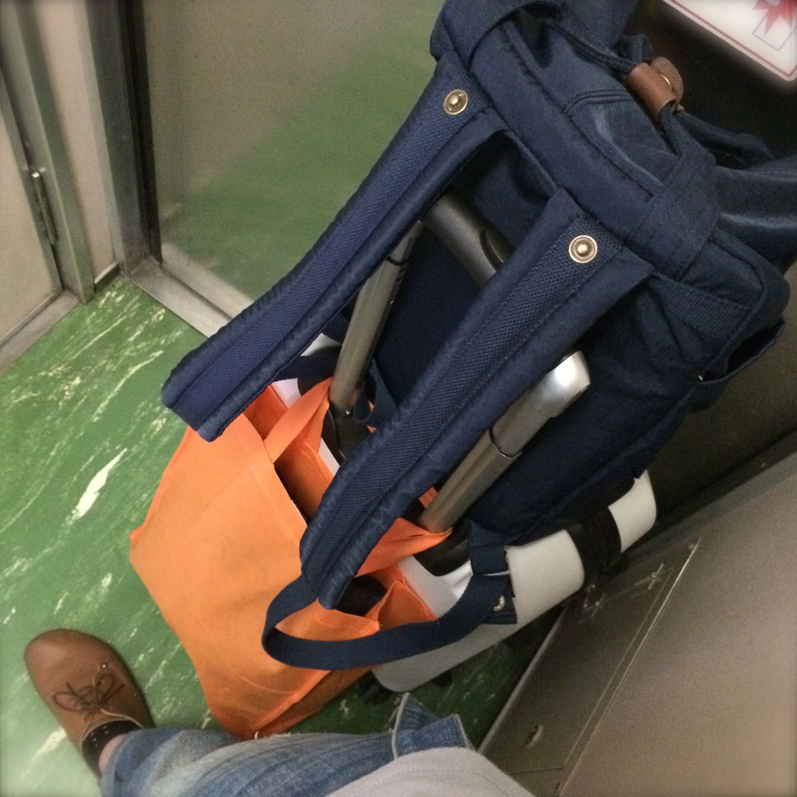
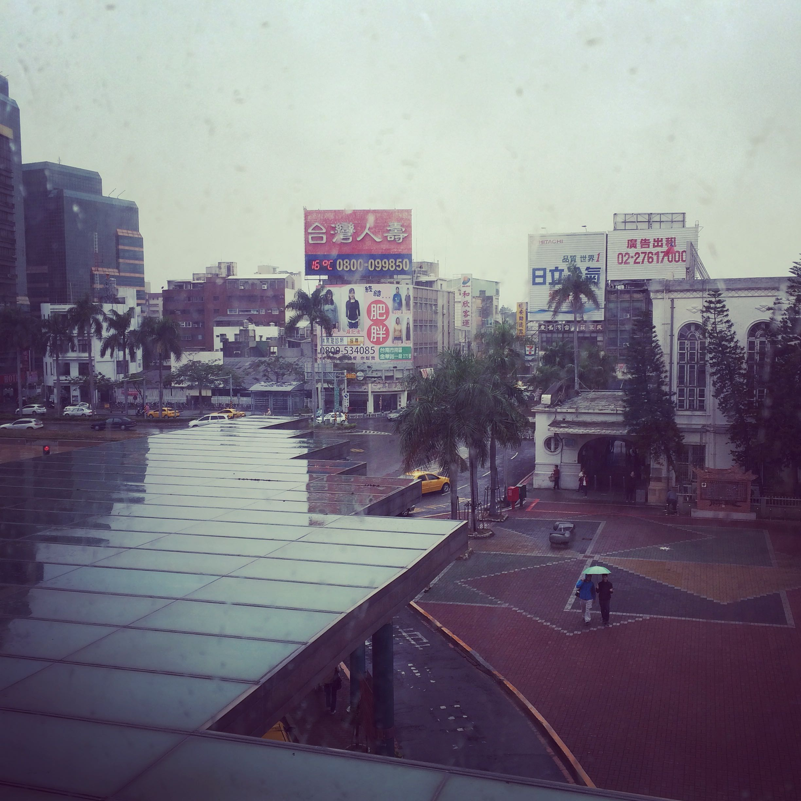
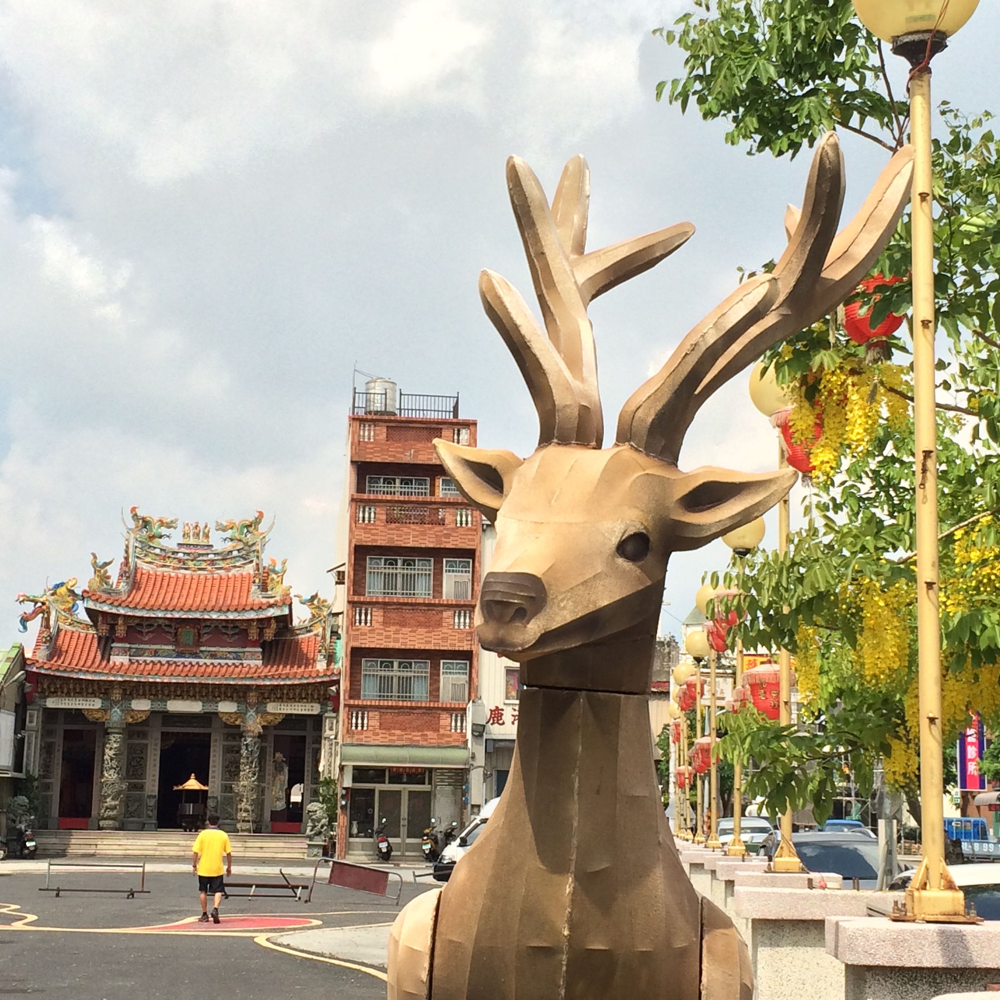
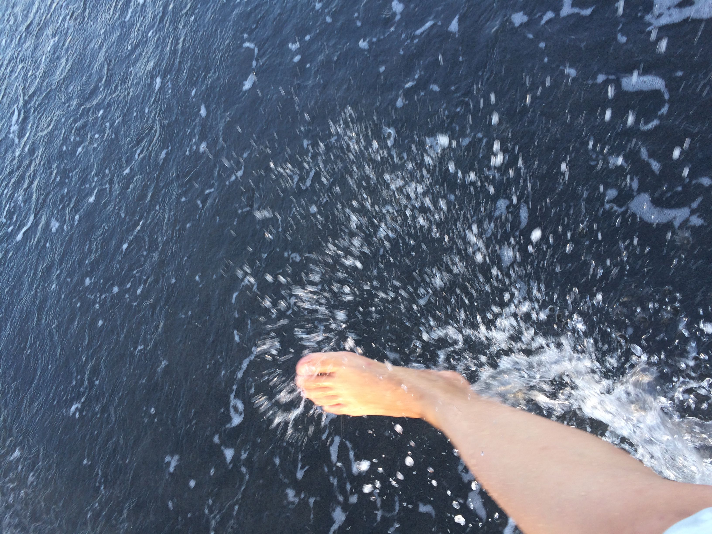

About

29歲的尾聲，決定重新學習何謂生活，來一場生命中的Long stay。
當你真心渴望追求某種事物的話，整個宇宙都會聯合起來幫你完成。
Living in Tainan

2015/4/1~5/8
新舊交集的城市。
喘口氣，慢慢生活，好好生活。
Living in Lukang

2015/5/11~5/29
一府、二鹿、三艋岬。
在這裡，我遇見珍愛故鄉的一群人。
Living in Dulan

2015/6/1~6/28
潮落之後，一定有潮起。
都蘭大海說：『世界如此遼闊，而我如此渺小。』